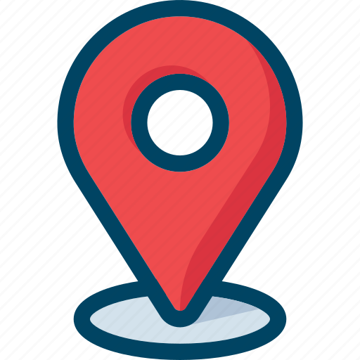
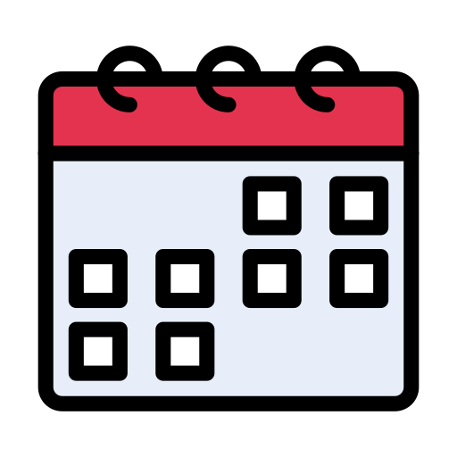

Nom du lieu

Paris
42 000

2024
Foot
Définition plus détailler du lieux. Un beau texte qui expliquera la raisons de ça création. Pourquoi ici ?
Pourquoi ces sport ici. Et l'image qu'il ont montrer au monde entier pour les jeux olympique.
Pont Alendre III
Le pont Alexandre III est l'un des monuments les plus emblématiques de la capitale,
connu pour son architecture élégante et ses ornements dorés. Ce lieu historique joue un rôle inédit puisqu'il accueillera des épreuves
de natation en eau libre et de triathlon dans la Seine, marquant ainsi le retour de cette rivière comme un espace sportif.
Ce choix symbolise les efforts de réhabilitation écologique de la Seine et offre un cadre spectaculaire aux compétitions.
créant une expérience unique pour les athlètes et le public.
Grand Palais
Définition plus détailler du lieux. Un beau texte qui expliquera la raisons de ça création. Pourquoi ici ?
Pourquoi ces sport ici. Et l'image qu'il ont montrer au monde entier pour les jeux olympique.
L'arena
Définition plus détailler du lieux. Un beau texte qui expliquera la raisons de ça création. Pourquoi ici ?
Pourquoi ces sport ici. Et l'image qu'il ont montrer au monde entier pour les jeux olympique.
Stade de France
St-Denis
-
80 000
-
1998
-
Rudby
Situé à Saint-Denis, au nord de Paris. Il est polyvalent et accueille des événements sportifs comme des matchs de football,
de rugby, ainsi que des compétitions d'athlétisme. En plus du sport, le Stade de France est un lieu de concerts majeurs pour des artistes internationaux.
Sa conception moderne inclut un toit partiellement rétractable et une modularité permettant d'adapter les installations selon les événements.
Ce stade symbolise une véritable fierté nationale.
Teahupo'o
Elle est mondialement célèbre pour ses vagues impressionnantes,
parmi les plus puissantes et dangereuses au monde, attirant chaque année les meilleurs surfeurs pour des compétitions comme le Tahiti Pro.
Cette plage, entourée de paysages tropicaux époustouflants, est également un lieu emblématique de la culture polynésienne.
Cependant, en raison de ses vagues puissantes et de ses récifs coralliens,
elle est réservée aux surfeurs expérimentés et constitue un spectacle fascinant pour les amateurs de sensations fortes.